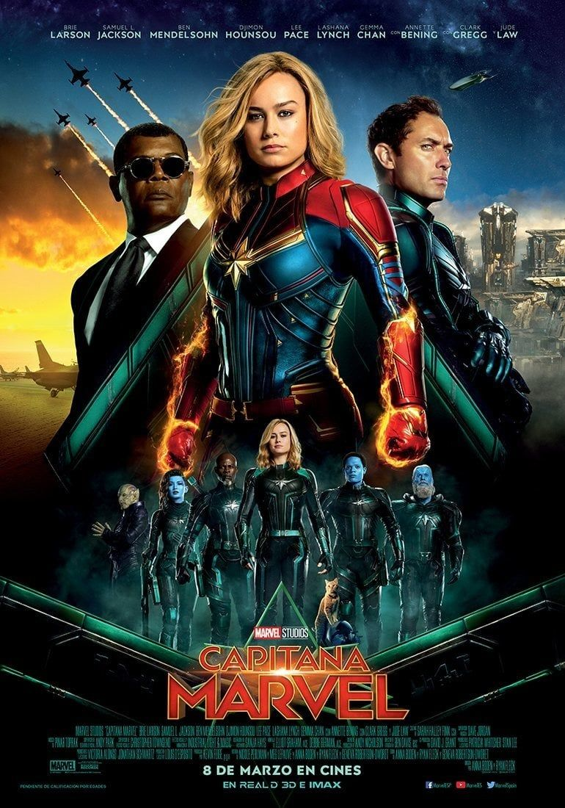

Reparto: Chris Evans, Hayley Atwell, Sebastian Stan, Tommy Lee Jones, Hugo Weaving
Duracion: 124 minutos
Pais: Estados Unidos
Sinopsis
Durante los oscuros días de la Segunda Guerra Mundial, Steve Rogers, un joven frágil pero de gran corazón, es rechazado repetidamente para alistarse en el ejército de los EE. UU.
Sin embargo, su determinación llama la atención del científico Dr. Abraham Erskine, quien lo selecciona para el "Proyecto Renacimiento", un experimento secreto que lo transforma en un supersoldado:
el Capitán América.
Armado con su icónico escudo indestructible, Steve Rogers se enfrenta a HYDRA, una organización nazi liderada por el temible Johann Schmidt (el Cráneo Rojo), quien busca dominar el mundo con un
arma de poder inimaginable. Con la ayuda de la valiente Peggy Carter y su leal amigo Bucky Barnes, el Capitán América debe detener al Cráneo Rojo antes de que sea demasiado tarde.
Dirigida por Joe Johnston, Capitán América: El Primer Vengador es una emocionante aventura de superhéroes que combina acción, patriotismo y drama, sentando las bases para el Universo
Cinematográfico de Marvel (MCU) y el surgimiento de los Vengadores.
Trailer oficial
Capitana Marvel

Ficha tecnica
Fecha de estreno: 2019
Direccion: Anna Boden, Ryan Fleck
Guion: Anna Boden, Ryan Fleck, Geneva Robertson-Dworet
Reparto: Brie Larson, Samuel L. Jackson, Ben Mendelsohn, Jude Law, Annette Bening
Duracion: 123 minutos
Pais: Estados Unidos
Sinopsis
Ambientada en los años 90, Capitana Marvel sigue la historia de Carol Danvers, una guerrera extraterrestre de la raza Kree que forma parte de un equipo de élite llamado Starforce. Tras sufrir
visiones fragmentadas de una vida pasada en la Tierra, Carol no recuerda quién era antes de convertirse en una soldado Kree.
Cuando una misión la lleva de regreso a su planeta natal, la Tierra, se ve envuelta en una guerra entre los Kree y los Skrulls, una raza alienígena con la habilidad de cambiar de forma.
Con la ayuda de un joven agente de SHIELD, Nick Fury, Carol comienza a descubrir la verdad sobre su pasado como piloto de la Fuerza Aérea de los EE. UU. y su conexión con un accidente que le
otorgó poderes cósmicos.
A medida que recupera sus recuerdos, Carol debe decidir en qué lado de la guerra está y enfrentarse a sus mentores Kree, incluido el misterioso Yon-Rogg. Con sus increíbles habilidades de vuelo,
fuerza sobrehumana y energía fotónica, se convierte en Capitana Marvel, una de las heroínas más poderosas del universo.
Dirigida por Anna Boden y Ryan Fleck, Capitana Marvel es una película de origen que explora temas de identidad, empoderamiento y lealtad, además de ser clave en el Universo Cinematográfico de
Marvel (MCU), conectando con eventos futuros como Avengers: Endgame.
Trailer oficial
Iron Man
Ficha tecnica
Fecha de estreno: 2008
Direccion: Jon Favreau
Guion: Mark Fergus, Hawk Ostby, Art Marcum, Matt Holloway
Reparto: Robert Downey Jr., Gwyneth Paltrow, Jeff Bridges, Terrence Howard
Duracion: 126 minutos
Pais: Estados Unidos
Sinopsis
Tony Stark, un genio multimillonario, playboy y fabricante de armas, es secuestrado en Afganistán por un grupo terrorista que lo obliga a construir un arma devastadora. En su lugar,
usando su ingenio y recursos limitados, construye una armadura tecnológica para escapar.
De vuelta en EE. UU., Stark anuncia que su empresa, Stark Industries, dejará de fabricar armas, lo que genera controversia. Mientras perfecciona su armadura (ahora con un reactor arc mejorado),
descubre que su mentor, Obadiah Stane, ha estado traficando armas bajo la mesa y está detrás de su secuestro. Stane roba la tecnología de Stark para crear su propia armadura gigante, Iron Monger.
En un enfrentamiento final, Iron Man debe usar todo su ingenio para derrotar a Stane y salvar a su asistente Pepper Potts y a la ciudad. La película termina con Stark revelando públicamente su
identidad como Iron Man, marcando el inicio del Universo Cinematográfico de Marvel (MCU).
Dirigida por Jon Favreau y protagonizada por Robert Downey Jr., Iron Man es una historia de redención, innovación y heroísmo que sentó las bases del éxito de Marvel Studios.